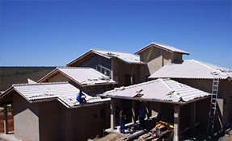

Atendemos toda Curitiba e região metropolitana com ética, respeito, responsabilidade, dedicação, eficiência e trabalho em equipe.
A melhor hora para inspecionar se as calhas em Curitiba estão funcionando ou precisam de manutenção é durante uma chuva forte.
Se a casa estiver próxima de arvores no outono principalmente podem ocorrer entupimentos e comprometimento da estrutura.
Veja como está o fluxo da água nos condutores Verifique atentamente as vezes podem ocorrer de haver detritos nas calhas.
Empresa especialista em calhas em Curitiba. Garantimos a qualidade das calhas que protegem seu imóvel danos que a água da chuva poderia provocar. Uma canalização e direcionamento correto da água é primordial para o bem estrutural de sua residência. As calhas instaladas e condutores que são conectados ao telhado são os principais componentes do sistema de calhas e devem ser projetados com cautela e profissionalismo.
Onde quer que nos sintamos em casa, estaremos à vontade.
William Hazlitt
 Garantir que o sistema de calhas está livre de detritos é importante. Isso deve ser feito por um profissional qualificado para não ocorrer acidentes e além de que um olhar de um profissional pode achar os defeitos que as vezes podem ser solucionados com reparo e colagem usando uma cola especial para calhas.
As calhas protegem toda a base da sua obra, pintura, evitar que a água entre em contato em páreas como varandas e garages. Também há a possibilidade de usar um sistema de captação para reaproveitamento da água da chuva. O material com que é fabricado a calhas devem ser medidos e dimensionados conforme o projeto, obra ou estabelecimento. Cada obra tem uma medida e deve ser seguido a risca regras de montagem para não haver vazamentos.
Existem alguns tipos de material para fabricação de calhas, chapa 0,26 chapa 0,24, chapas galvanizadas, chapas em alumínio, chapa branca, chapa em inox. O material mais comumente solicitado são galvanizado para a cidade que duram mais de 10 anos quando usados a espessura correta. Chapa em alumínio é mais solicita na praia que a ação do mar coroe muito o aço, e o alumínio dura muito mais.
Existem muitos tipos de calhas, para cada tipo de construção são indicados o tipo correto de calha pelo técnico e cada um tem suas funções específicas. É preciso muita atenção na hora de escolher o modelo de calha a ser instalada e o material que será usada. Por este fato é imprescindível a presença de um técnico qualificado para identificar a particularidade do telhado para que seja efetuado a instalação das calhas em Curitiba com sucesso.
Mais de 20 anos de tradição não são por acaso. Referencia quando fala-se, calhas em curitiba
Referencia em instalação de calhas em curitiba e região!
Todos os direitos reservados e privados | EmpresarialWeb